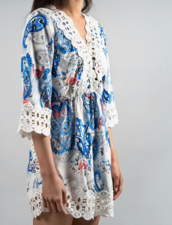

<section class="about-us">
    <div class="about-us__header">
      <h1>About Our Development Team</h1>
    </в>
    <section class="team">
      <h2>Meet Our Team</h2>
      <div class="team-member__block">
        <div class="team-member">
          
          <div class="member-details">
            <h3>Irina Peshko</h3>
            <p>Lead Developer</p>
            <p>11.11.1999</p>
            <p>Brest, Belarus</p>
            <p>Irina is passionate about web development and e-commerce solutions. She graduated from the university with a red diploma
            in speech therapy, demonstrating her aptitude for learning and adapting.</p>
            <a href="https://github.com/IrinaPeshko" target="_blank">GitHub Profile: @IrinaPeshko</a>
          </div>
        </div>
        <div class="team-member">
          
          <div class="member-details">
            <h3>Maria Kashpur</h3>
            <p>Frontend Developer</p>
            <p>11.11.1999</p>
            <p>Minsk, Belarus</p>
            <p>Maria, formerly a lawyer, is enthusiastic about creating stunning user interfaces. Her background in law has honed her
            analytical and problem-solving skills, which greatly benefited her work in web development.</p>
            <a href="https://github.com/maria-kashpur" target="_blank">GitHub Profile: @maria-kashpur</a>
          </div>
        </div>
        <div class="team-member">
          
          <div class="member-details">
            <h3>Alina Davis</h3>
            <p>Frontend Developer</p>
            <p>11.11.1999</p>
            <p>Brest, Belarus</p>
            <p>Alina is a Master of information systems and technologies with a background in computer graphics and web design. Her unique background allows her to bring a creative perspective to her work as a Frontend Developer.</p>
            <a href="https://github.com/idiamondcat" target="_blank">GitHub Profile: @idiamondcat</a>
          </div>
        </div>
      </div>
    </section>
    <div class="about-us__content">
      <section class="contributions team">
        <h2>Our Contributions</h2>
        <p>Irina, Maria, and Alina worked together to create an innovative online women's clothing store using
          ecommerstools. Here are some of our significant contributions to the project:</p>
        <ul>
          <li>Irina: Led the development team, implemented the user authentication system.</li>
          <li>Maria: Designed and developed the visually appealing frontend interface.</li>
          <li>Alina: Built the robust backend system for managing products and orders.</li>
        </ul>
      </section>
      <section class="collaboration team">
        <h2>Effective Collaboration</h2>
        <p>Our success was a result of effective collaboration. We held regular meetings to discuss progress, challenges,
          and new ideas. Communication channels were always open, ensuring a smooth workflow throughout the project. Each
          team member's expertise complemented the others, leading to a successful outcome.</p>
      </section>
    </div>
    <footer>
      <a class="about-us__rslogo" href="https://rs.school/">
        
      </a>
    </footer>
  </section>